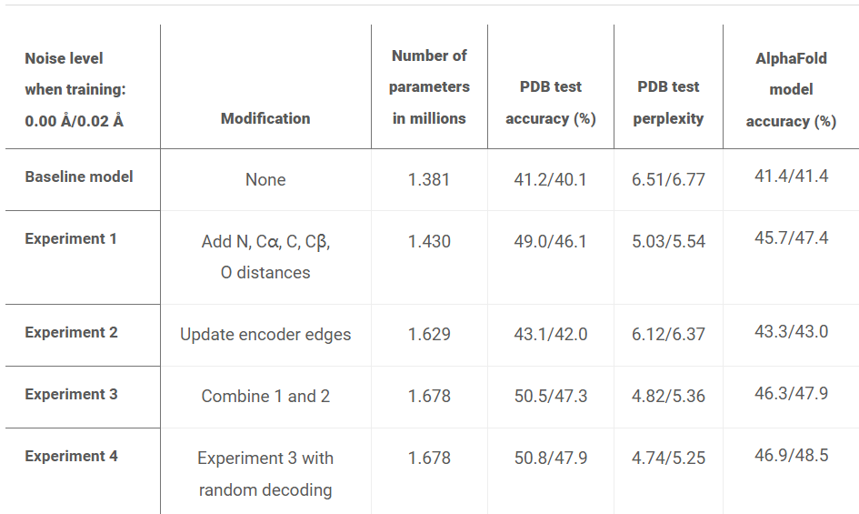

ProtMPNN 阅读笔记 (临时)
MPNN 是 Message-Passing Neural Network 的缩写.
本文目的: 目标: 设计一个可以应用在单体 & 环状低聚体 & protein nanoparticles & PPI (protein-proten interface) 的 DeepLearning-based sequence desing method.
摘要
Although deep learning has revolutionized protein structure prediction, almost all experimentally characterized de novo protein designs have been generated using physically based approaches such as Rosetta. Here, we describe a deep learning–based protein sequence design method, ProteinMPNN, that has outstanding performance in both in silico and experimental tests. On native protein backbones, ProteinMPNN has a sequence recovery of 52.4% compared with 32.9% for Rosetta. The amino acid sequence at different positions can be coupled between single or multiple chains, enabling application to a wide range of current protein design challenges. We demonstrate the broad utility and high accuracy of ProteinMPNN using x-ray crystallography, cryo electron microscopy, and functional studies by rescuing previously failed designs, which were made using Rosetta or AlphaFold, of protein monomers, cyclic homo-oligomers, tetrahedral nanoparticles, and target-binding proteins.
相关工作
- 基于物理的方法:
Rosetta - 将序列设计看成一个能量优化问题.
- 深度学习方法:
优点: 给定单体蛋白骨架, 可迅速生成序列, 无需考虑侧链异构.
不足: 现有方法不能应用到当前各种蛋白设计挑战上, 且未经过广泛实验验证.
动机与尝试
出发点: 一个有 3 个 encode & 3 个decoder, hidden size = 128 的 MPNN [Ref1]. 我 称为 baseMPNN.
- baseMPNN
构成 encode/decoder 各 3 个. hiddne dimension = 128.
模型类型 autoregressive
序列预测顺序 从 N 端到 C 端.
- 输入
Ca-Ca 距离
relative Ca-Ca frame orientations and rotations
backbone dihedral angles
他们首先想要提升 baseMPNN 复原天然单链蛋白氨基酸序列的能力. 相关实验结果见 论文结论. 这里描述他们所做的试验. 首先准备数据集: 19,700 个来自 PDB 的高精度 单链结构, 用 CATH 数据库按 8:1:1 分成训练:测试:验证集.
试验 1: 发现若加入 N, CA, C, O 原子的坐标外加一个由其他骨架原子坐标计算出的虚拟 Cb 之间的 相互距离可以提升模型表现. 参见 论文结论 的 experiment 1.
试验 2: 在 backbone encoder 已有的 node update 机制的基础上添加 edge update 可 以提升性能. 参见 论文结论 的 experiment 2.
结合 试验 1 和试验 2 也可提升效果. [1]. 这也可以提升一点性能.
他们还研究了 K-nearest-Ca neighbor 神经网络如何影响氨基酸身份 [fig 发现效果在 32-48 时饱和. 作者的解释是: 因为氨基酸的 optimality 很大程度上依赖附近的蛋白环 境, 因此结构到序列的映射可以被 locally connected graph neural network 准确捕捉.
ProtMPNN 设计的思路.
为了能够应用到各种单链和多链序列设计任务上, 他们首先采用了顺序无关的decoding 顺 序: 在所有可能出现突变的位点随机采样. 这样可以用在类似 binder design 的任务上; 在此任务中, target 是固定的, 不会对 target 进行采样, 但是会将 target 包含到 sequence context 中.
设计 multichain protein 的策略:以 homodimer 为例, 分别预测两条链的 unnormalized probabilities, 然后取平均,再获得 normalized probabilities.
multistate protein 的设计针对蛋白的每个态预测一个 unnormalized probability, 然 后将每个unnormalized probability 线性组合. 线性组合系数可是正数或负数, 标示着 UpWeight 或 DownWeight.
ProtMPNN 就是结合了上面两种策略的 MPNN 模型.
此外, 作者还发现在加入了标准差为 0.2A 的高斯噪声的蛋白质骨架上训练 ProtMPNN 可 以在 UniRef50 中的AF2结构上 (平均 pLDDT > 80.0) 取得更好的 sequence recovery 效 果. 但是在有噪骨架上训练的模型在实验结构上表现不如在无噪声骨架上训练的 ProtMPNN.
训练
训练 Single chain models
- 基础信息
训练集: 19.7k 个来自 PDB 的高分辨率单链结构, 按 8:1:1 分成训练/测试/验证集.
学习率计划与初始化: 按原始 Transformer 论文 [Ref2]
dropout: 10%.
label smoothing rate: 10%.
batch size: 6000 tokens.
graph sparsity: 30 nearest neighbors using Ca-Ca distances.
对 baseMPNN 的调整:
边特征计算. 来自残基 \(i, j\) 的 N, Ca, C, O, Cb 坐标的相互距离 (5x5=25), 通过 16 个中心从 0 到 20A 均匀增长的高斯 RBF 函数, 最终每对残 基都会有 25x16=400个 边特征.
Edge update 的机制. 设 \(V_i, V_j, E_{ij}\) 是残基 \(i, j\) 的节 点 (vortex) 和边 (edge) 特征.
过程: 首先将 \(V_i, V_j, E_{ij}\) 连接成一个大张量, 通过一个 MLP 构造
message\(M_{ij}\).message沿着邻居维度 (j) 求和, 然后再用一 个 MLP 获得更新后的节点 \(V_i^{new}\). 然后用这些新节点和一个 MLP 生 成新边, i.e. \(E_{ij}^{new} = MLP(V_i^{new}, V_j^{new}, E_{ij})\). 这 里一共有 3 个 MLP [参见 模型架构]所有的 MLP 层都应用了 Layer Normalization, dropout, and residual connections. i.e.
\[h_{new} = \mathrm{LN}\left[ h_{old} + Dropout(h) \right].\]Random Decoder Order. 作者是通过即时构造置换矩阵来实现的.
训练 multi chain models.
- 训练集:
来自 PDB 的 assembly (截至 2021-08-02); 测定方法为 X-ray crystallography 和 Cryo-EM; 分辨率优于 3.5A, 长度小于 1e4 个残基.
按 30% 序列相似度聚类, 工具为 MMseqs2. 最终获得 25361 个类.
训练时, 遍历所有 clusters, 从 cluster 中随机选一个序列 (query chain), 然后再随 机选一个构象(如果有多个构象). 最后重构 biological assembly. 若有多个 biological assemblies, 则随机选一个.
对 hetero-oligomeric assemblies, mask 掉 query chain, 但将 biological assembly 中所有其他链的信息都告诉网络.
对 homo-oligomeric assemblies, mask 掉所有的链以避免信息泄露. 同源序列的认定标 准: TM-align 给出的序列相似性超过 70%.
Loss functions & optimization
采用 log likelihood 作为 loss function, 10% label smoothing rate (不用标签 平滑结果也很好). 训练 loss 定义为 \(sum(loss * mask) / 2000\), 2000 是 一个经验参数 [2]. 这里的 mask 是什么?
Input features
ProtMPNN 不使用结点特征 (使用残基二面角作结点特征并未获得更好的结果, 因此简 洁起见不用任何结点特征).
- 边特征:
包含残基间距离和序列内距离 (两个残基之间相距多少个残基). 序列内距离 用 relative positioning encoding 编码; 若残基在不同链上, 会有一指示 器.multichain model 的 RBF 中心是 2-22A 均匀分布的 16 个点.
- relative positioning encoding:
采用类似 AlphaFold-2 的 one-hot 编码, 距离上 上限为 32, 即:
-32, -31, ..., 31, 32.
若残基在其他链上, 还会有一个 33 的 token.
没有 positional encoding 也没有影响: “Ablating positional encodings showed almost the same performance suggesting that relative primary sequence or inter-chain information is already present in the Euclidean distances between atoms, e.g. distances between neighboring Cα atoms are the same for all residues.” [补充材料 p4]
模型架构
使用 encoder-decoder message passing neural networks. [补充材料参考文献 1, 22, 28]. Encoder 用三个 hidden size = 128 的 MLP 更新结点和边特征 (好像没有结点特征, 参见 Input features). 不用更大的 hidden size 是因为在验证集上这样做的收 益不大 (而 MLP 是很耗内存的). Decoder 将 encoder 的输出和蛋白质序列的 embedding 作为输入; Decoder layer 是 hidden size = 128 的有三个 layer 的原始 MPNN layer.
Encoder 和 Decoder 的 MLP 都有三层线性层; 激活函数均为 GELU; Feedfoward 层都是 带 GELU 的两层线性层, 且中间 hidden size 比原始 Transformer 论文的大 4 倍.
Encoder Layer 的 forward 方法:
def encoder_layer_forward(V, E):
M_ij = MLP[V_i, V_j, E_ij]
dV_i = Sum_j [M_ij]
V_i = LayerNorm[V_i + Dropout(dV_i)]
dV_i = FeedForward[V_i]
V_i = LayerNorm[V_i + Dropout(dV_i)]
dE_ij = MLP[V_i, V_j, E_ij]
E_ij = LayerNorm[E_ij + Dropout(dE_ij)]
return V, E
Decoder Layer 的 forward 方法:
def decoder_layer_forward(V, E, S, mask):
E_ij = Concat[E_ij, S_j] * mask_ij + Concat[E_ij, 0.0*S_j] *(1-mask_ij)
M_ij = MLP[V_i, V_j, E_ij]
dV_i = Sum_j [M_ij]
V_i = LayerNorm[V_i + Dropout(dV_i)]
dV_i = FeedForward[V_i]
V_i = LayerNorm[V_i + Dropout(dV_i)]
return V
问题 mask 是什么? 前面有印象说是上三角矩阵, 但是其元素值怎么确定呢?
更多虚拟验证 (in sillico analysis)
- 和 Rosetta fixed backbone design 比较
ProtMPNN 在 402 monomer 测试集上, 显著更优 (recovery 52.4% v.s. 32.9%). 此 外还观察到两种模型的序列 recoveries 存在相关性 (fig.S12).
- 氨基酸偏好
Fig.S2 描述了 ProtMPNN 和 Rosetta 的氨基酸偏好.
Rosetta: overrepresentation of alanines in the core and boundary.
ProtMPNN: its amino acid bias is a function of the sampling temperature (Fig.S6); low temperatures introducing more charged amino acids on the surface (这说明原始的 logits 偏好带电氨基酸).
Both: favour a negatively charged glutamic acid, E, on the surface; and disfavour a polar amino acid glutamine, Q.
ProtMPNN and Rosetta biases strongly disagree for lysine, K, on the surface.
论文结论
我的问题
CATH
J. Ingraham, V. K. Garg, R. Barzilay, T. Jaakkola, “Generative models for graph-based protein design” in Advances in Neural Information Processing Systems 32 (NeurIPS 2019), H. Wallach, H. Larochelle, A. Beygelzimer, F. d’Alché-Buc, E. Fox, R. Garnett, Eds. (Neural Information Processing Systems Foundation, 2019), pp. 15741–15752.
A. Vaswani, N. Shazeer, N. Parmar, J. Uszkoreit, L. Jones, A. N. Gomez, L. Kaiser, I. Polosukhin, “Attention is all you need” in Advances in Neural Information Processing Systems 30 (NeurIPS 2017), I. Guyon, U. Von Luxburg, S. Bengio, H. Wallach, R. Fergus, S. Vishwanathan, R. Garnett, Eds. (Neural Information Processing Systems Foundation, 2017), pp. 5999–6009.